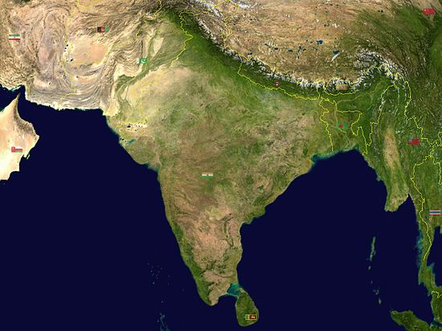

The geography of India is extremely diverse, with landscape ranging from snow-capped mountain ranges to deserts, plains, hills and plateaus. India comprises most of the Indian subcontinent situated on the Indian Plate, the northerly portion of the Indo-Australian Plate. Having a coastline of over 7,000 km (4,300 miles), most of India lies on a peninsula in southern Asia that protrudes into the Indian Ocean. India is bounded in the southwest by the Arabian Sea and in the southeast by the Bay of Bengal. The fertile Indo-Gangetic plain occupies most of northern, central and eastern India, while the Deccan Plateau occupies most of southern India. To the west of the country is the Thar Desert, which consists of a mix of rocky and sandy desert. India's east and northeastern border consists of the high Himalayan range. The highest point in India is disputed due to a territorial dispute with Pakistan; according to India's claim, the highest point (located in the disputed Kashmir territory) is K2, at 8,611 m (28,251 feet). The highest point in undisputed Indian territory is Kangchenjunga, at 8,598 m (28,208 feet). Climate ranges from equatorial in the far south, to tundra in the Himalayan altitudes.
ndia lies to the north of the equator between 8 degree 4 minutes and 37 degree 6 minutes north latitude and 68 degrees 7 minutes and 97 degrees 25 minutes east longitude. It is the seventh-largest country in the world, with a total land area of 3,287,590 km² (1,269,219 square miles). India measures 3,214 km (1,997 miles) from north to south and 2,933 km (1,822 miles) from east to west. It has a land frontier of 15,200 km (9,445 miles) and a coastline of 7,516.5 km (4,670.5 miles). The Andaman and Nicobar Islands in the Bay of Bengal and Lakshadweep in the Arabian Sea are parts of India. India is bounded on the southwest by the Arabian Sea and on the southeast by the Bay of Bengal. On the north, northeast, and northwest are the Himalayas. Kanyakumari constitutes the southern tip of the Indian peninsula, which narrows before ending in the Indian Ocean.